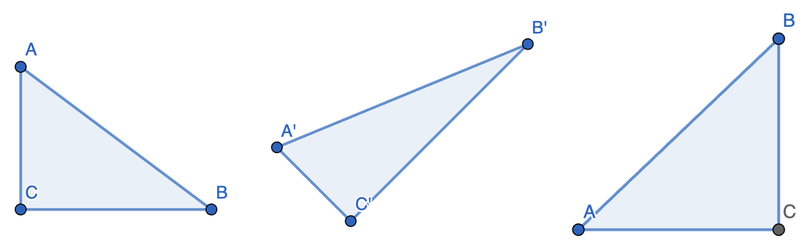
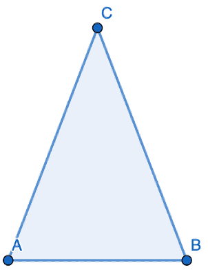
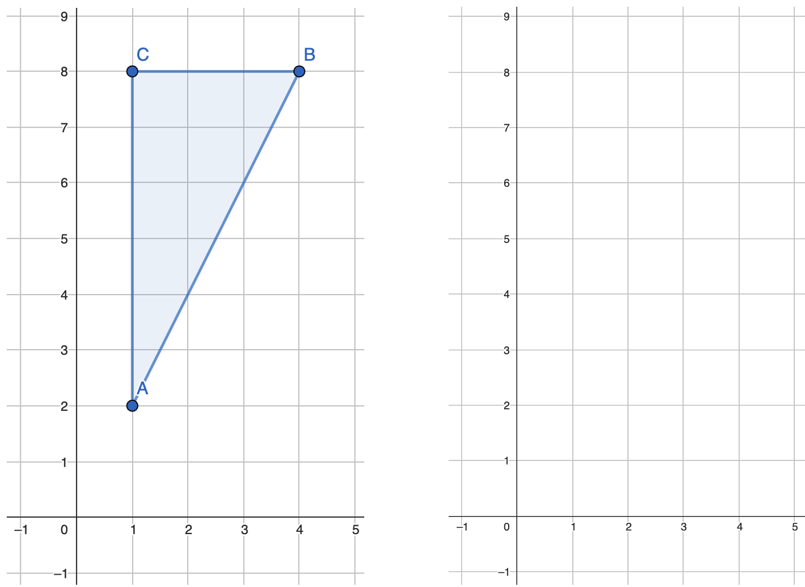
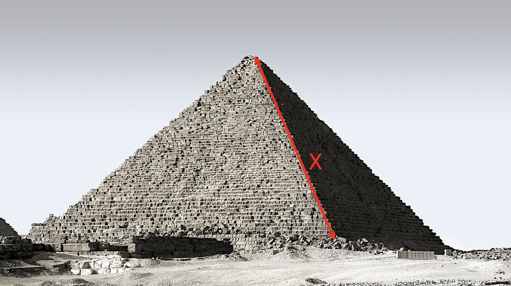

Satzgruppe des Pythagoras
Vertiefung Satz des Pythagoras
Eine Doppellektion mit vertiefenden Textaufgaben zum Thema Satz des Pythagoras.
Lektionsablauf
Bekanntgabe der Learning Outcomes (2 min)
Repetition im Plenum (13 min)
Konfrontationsaufgabe (Powerpoint)
Aufgabe:
Kletterer: Wie lange ist das Seil zwischen dem Kletterer und dem Sicherer? (5,12,13)
SuS sollen ca. 3-5 Minuten versuchen, das Problem zu lösen, anschließend Besprechung im Plenum.
Weitere Aufgaben
- Berechnung einer Kathete und der Hypotenuse an der Wandtafel.
- Seitenlängen der Dreiecke: (7, 24, 25) & (8, 15, 17) (Fett markierte Zahlen sind zu berechnen).
Nach dem Beispiel mit dem Kletterer, Abwägen, ob eine weitere Hypotenuse im Plenum berechnet werden soll.
Falls nötig, kann folgendes Video gezeigt werden:
Beweis mit Wasser
Wichtige Hinweise:
- Die Eckpunkte der Dreiecke können beliebige Namen haben (nicht immer A, B, C).
- Bei welchen Dreiecken kann der Satz des Pythagoras angewendet werden? Bei welchen nicht?
Modell zur Veranschaulichung:
Repetitionsaufgaben lösen (Einzelarbeit) (20 min)
Aufgabenbesprechung im Plenum (15 min)
Realschüler hören bei der Besprechung von Aufgabe 1c zu und können ebenfalls davon profitieren.
Input: Konfrontationsaufgabe “Raumdiagonale im Quader” (10 min - Partnerarbeit)
Datei von GeoGebra:
GeoGebra-Datei
Die Datei wird heruntergeladen und lokal in der “GeoGebra Calculator Suite” gezeigt.
Vorgehen:
SuS werden konfrontiert und tüfteln eigenständig an der Lösung, ohne Hilfe von der Lehrperson.
Nach ca. 5 Minuten wird das Dreieck unter der Raumdiagonale eingeblendet, als Tipp für die SuS.
SuS, die schneller sind, können bereits mit der Pyramidenaufgabe auf dem Arbeitsblatt fortfahren.
Auflösung “Raumdiagonale im Quader” (5 min)
- Hinweis: Der Satz von Pythagoras muss hier zweimal angewendet werden.
Selbstständiges Arbeiten am Arbeitsblatt (Einzelarbeit) (15 min)
- Textaufgaben (Zwei Aufgaben als Grundanforderung).
- Pyramidenhöhe berechnen (für Sekundarschule).
- Weiterführende Textaufgaben (Für Spezialisierte Sekundarschule).
Eigenständiges Korrigieren der Textaufgaben im Plenum (10 min)
Für SuS, die die Pyramidenaufgabe bearbeitet haben, wird die Aufgabe gemeinsam besprochen.
GeoGebra-Datei:
GeoGebra-Datei
Die Datei wird heruntergeladen und lokal in der “GeoGebra Calculator Suite” gezeigt.
Andere SuS korrigieren ihre Textaufgaben mithilfe der auf LearningView bereitgestellten Lösungen.
Lernumgebung
Schreibe deine Lösungswege auf ein zusätzliches Blatt.
1 Repetition vom Herbst
Aufgabe 1a: Beschrifte die Seiten der Dreiecke und zeichne die rechten Winkel ein.
Aufgabe 1b: Berechne die fehlenden Seiten des Dreiecks.
Alle drei Dreiecke sind rechtwinklig.

| Dreieck 1 | Dreieck 2 | Dreieck 3 |
|---|---|---|
| a: 4 | a: 12 | a: _____ |
| b: 3 | b: _____ | b: 21 |
Aufgabe 1c: (für Sek und Spez. Sek)
Das Dreieck ABC hat keinen rechten Winkel, es ist aber gleichschenklig.
So lange sind die Seiten: a = 13, b = 13, c = 10
Wie gross ist die Fläche von Dreieck 4?
Dreieck 4:

Dreiecke im Koordinatensystem
Aufgabe 2b:
Welche Koordinaten haben die Eckpunkte vom Dreieck 5? Trage sie in die Tabelle 2 ein.
Aufgabe 2c:
Berechne die Seitenlängen a, b, und c von Dreieck 5.
Aufgabe 2d:
Zeichne das Dreieck 6: A: (1;1), B: (4;1), C: (4;6) in das Koordinatensystem und berechne die Seitenlängen.
| X | Y | |
|---|---|---|
| A | 1 | 2 |
| B | ||
| C |
 
Seitenlängen von Dreieck 5: a:________ b:________ c:________
Seitenlängen von Dreieck 6: a:________ b:________ c:________
Aufgabe 2e:
Gestalte auf einem zusätzlichen Papier dein eigenes Dreieck und kreiere eine Aufgabe dazu ähnlich wie beim Kletterer zu Beginn der Lektion. Tausche diese Aufgabe mit jemandem aus deiner Klasse, der auch schon mit Aufgabe 2c fertig ist.
Cheopspyramide
Die Pyramiden von Gizeh wurden vor ca. 4600 Jahren gebaut. Die Cheopspyramide ist die grösste und besitzt eine quadratische Grundfläche mit einer Seitenlänge von 230 Meter. Die gekennzeichnete Kante x ist 214m Lang.
Wie hoch ist die Pyramide?

Textaufgaben:
Bevor du rechnest: - Schätze das Ergebnis grob ab und notiere es - Zeichne die Situation auf ein separates Blatt.
Der Weg durch den Park: (Grundanforderung)
Peter will durch einen rechteckigen Park von der Ecke A zur gegenüberliegenden Ecke B laufen. Die Länge des Parks beträgt 11 Meter, und die Breite beträgt 24 Meter. Wie lang ist der direkte Weg durch den Park?
Jonas in Paris (Grundanforderung)
Jonas ist in Paris und sieht die Spitze des Eiffelturms in der Ferne. Jonas ist Geomatiker und hat ein spezielles Messgerät dabei. Mit diesem Gerät findet er heraus, dass die Spitze genau 2000m von ihm entfernt ist. Er erinnert sich daran, dass der Turm 300m hoch ist. Wie weit ist Jonas vom Fuss des Eiffelturms entfernt?
Kabel im Zimmer
Das Zimmer von Max ist 4 Meter lang, 5 Meter breit und 3 Meter hoch. In einer Ecke ganz oben will er eine Lampe montieren. Die einzige Steckdose ist aber in der gegenüberliegenden Ecke ganz unten. Max spannt also das Kabel direkt von der Steckdose, quer durch den Raum zur Lampe. Wie lang ist das Kabel, das diagonal durch den Raum gespannt ist?
Didgeridoo Transport
Simona liebt spezielle Musikinstrumente. Deshalb hat sie in der Brockenstube ein Didgeridoo gekauft. (traditionelles Musikinstrument der nordaustralischen Aborigines.) Das Instrument ist 1.9 Meter lang. Simona weiss nicht, ob es in ihr kleines Auto passt. Der Kofferraum ihres Autos ist 1.5m Breit, 1 Meter tief und 0.8m hoch. Passt das Didgeridoo in Simonas Kofferraum?
Eigene Textaufgabe
Erstelle eine eigene Textaufgabe und tausche sie mit jemandem aus der Klasse, der auch schon fertig ist.
Learning Outcomes
Kompetenzen, die bereits vor einem halben Jahr erworben sein sollten:
- Die SuS können entscheiden, ob der Satz des Pythagoras auf ein gegebenes Dreieck anwendbar ist oder nicht.
- Die Schülerinnen und Schüler können den Satz des Pythagoras korrekt anwenden, um die Länge einer fehlenden Seite in rechtwinkligen Dreiecken zu berechnen.
Kompetenzen meiner Doppellektion:
- Die Schülerinnen und Schüler können den Satz des Pythagoras zur Berechnung der Raumdiagonale in einem Quader anwenden.
- Die Schülerinnen und Schüler können eigenständig Textaufgaben lösen, die den Satz des Pythagoras in verschiedenen Kontexten anwenden.
Lehrpersonenkommentar zur Doppellektion über den Satz des Pythagoras
Diese Unterrichtseinheit findet im FS der achten Klasse statt. Sie führt die Anwendung des Satzes des Pythagoras nach der Einführung im HS fort und bietet den SuS die Möglichkeit, ihr Verständnis durch verschiedene Aufgaben und Methoden zu vertiefen. Die vorliegende Planung umfasst eine Doppelstunde und beinhaltet sowohl Einzel- als auch Partnerarbeit.
Bedingungsannahme
Ich gehe davon aus, dass sich die Klasse auf diese Art von Unterricht in den letzten 1.5 Jahren gewöhnen konnte. Ausserdem gehe ich davon aus, dass der Einstieg durch eine Konfrontationsaufgabe für die Klasse nicht neu ist.
Voraussetzungen und Vorwissen:
Die SuS sollten bereits grundlegende Kenntnisse über rechtwinklige Dreiecke haben und wissen, was Hypotenuse, Kathete und Winkel sind. Sie sollten einfache Berechnungen von Flächen und Längen durchgeführt haben, sowie mit den grundlegenden Rechenoperationen sicher umgehen können. Sie sollten wissen, wie man eine Formel mit einer Wurzel umformen kann.
Ablauf und Schwerpunkte:
- Zur Repetition beginnt der Unterricht mit einer Konfrontationsaufgabe („Wie lange ist das Seil zwischen dem Kletterer und dem Sicherer?“), um das Thema praktisch zu eröffnen. Sie dient dazu, alle SuS auf einen gemeinsamen Wissensstand zu bringen.
- Diese soll die SuS dazu anregen, sich eigenständig in das Thema einzuarbeiten. Eine Lösung im Plenum folgt, um sicherzustellen, dass alle SuS die Methode verstanden haben.
- Im zweiten Teil arbeiten die SuS individuell an Repetitionsaufgaben, um das Gelernte zu festigen. Diese Aufgaben überprüfen einfache Seitenberechnungen in rechtwinkligen Dreiecken. Es folgt eine Besprechung der Ergebnisse im Plenum.
- Daraufhin bearbeiten die SuS in Partnerarbeit eine anspruchsvollere Aufgabe zur Berechnung der Raumdiagonale in einem Quader. Hierbei soll der Einsatz von GeoGebra (Datei vorbereitet) helfen, das räumliche Verständnis zu fördern. Der Quader soll auf der Leinwand gezeigt werden. Nach ca. fünf Minuten soll das Dreieck unter der Raumdiagonale als Hilfeleistung eingeblendet werden. Es soll in niveaudurchmischten Gruppen gearbeitet werden.
- Nach der Auflösung der Quader-Aufgabe geht die Klasse wieder zurück ans Arbeitsblatt.
- Die SuS dürfen selber entscheiden, woran sie arbeiten wollen.
- Der genaue Ablauf steht im Lektionsablauf beschrieben.
Wichtige Hinweise:
- Die SuS sollen möglichst selbstständig arbeiten, auch bei der Raumdiagonalen-Aufgabe. Den SuS soll genügend Zeit zur Verfügung stehen, eigene Lösungswege zu finden, bevor sie Tipps erhalten.
- Die GeoGebra-Dateien sollten bereits vor der Lektion vorbereitet werden, um technische Verzögerungen zu vermeiden.
- Die nicht markierten Aufgaben sind Grundanforderung. Die Aufgaben für Sek und Spez. Sek sind markiert.
- In der Einzelarbeit bei Aufgabe 2 sollen die SuS so weit arbeiten wie sie kommen. Grundanforderung ist aber Aufgabe 2d.
Unterrichtsmethoden & -Techniken
Angewandte Unterrichtsmethoden:
In meiner Lektion nutze ich einen Mix aus verschiedenen didaktischen Methoden, um den Lernprozess der SuS zu unterstützen. Der Einstieg ist die Repetition des Themas und erfolgt über eine Konfrontationsaufgabe, bei der die SuS durch eine reale Fragestellung (Kletterer) in das Thema eingeführt werden. Studien zeigen, dass der Einsatz von realitätsnahen Aufgaben, wie mit dem Kletterer, die Motivation und das Interesse der Schüler deutlich steigern kann. Schüler sehen so die Relevanz von Mathematik in ihrem Alltag und sind motivierter, das Gelernte anzuwenden.
Ich will den SuS keine Hilfestellung geben. Dies regt aktives Mitdenken und Problemlösen an. Ich gehe davon aus, dass einige SuS direkt wissen, wie sie das Problem angehen sollen, einige nicht. Die anschliessende Arbeit im Plenum soll alle auf den gleichen Stand bringen. Hierbei wird besonders darauf geachtet, dass die SuS die Voraussetzungen für die Anwendbarkeit des Satzes des Pythagoras verstehen und erkennen, dass die Beschriftung der Dreiecke flexibel gestaltet werden kann.
In der folgenden Einzelarbeit bearbeiten die SuS Repetitionsaufgaben, um ihr Verständnis zu festigen. Dieser Abschnitt erlaubt ihnen, eigenverantwortlich zu arbeiten. Zudem sollten nach diesen Aufgaben alle SuS wieder auf dem nötigen Wissensstand sein, Kompetenzen zu erlernen, wie das Berechnen der Raumdiagonalen und das richtige Interpretieren und Lösen von Textaufgaben.
Der nächste Abschnitt beinhaltet eine Partnerarbeit, bei der die SuS eine herausfordernde Aufgabe zur Raumdiagonalen im Quader lösen. Ich setze dabei bewusst auf eine offene, forschende Herangehensweise, um die SuS zum kreativen Tüfteln anzuregen. Bei Bedarf greife ich mit gezielten Hinweisen ein, lasse aber zunächst viel Raum für eigene Lösungsansätze. So will ich im 3D Modell in GeoGebra das Dreieck unter der Raumdiagonale einblenden. Dies könnte SuS, die noch keinen Lösungsansatz gefunden haben, auf die Sprünge helfen. Ich gehe davon aus, dass es in dieser Klasse bereits eingespielte Teams gibt, diese heissen beispielsweise “Sternteams” und “Wolkenteams”. In Sternteams arbeiten jeweils zwei SuS mit unterschiedlichen Niveaus zusammen. So kann der stärkere Lernende seinen Partner unterstützen. Im Wolkenteam arbeiten SuS vom selben Niveau zusammen. Um möglichst alle auf Kurs zu halten, möchte ich für diese Aufgabe die Sternteams verwenden.
Am Ende folgt die Plenumsbesprechung, in der die SuS ihre Lösungen präsentieren, moderiert durch die Lehrkraft. Die Lektion endet mit einer weiteren Einzelarbeit an vertiefenden Aufgaben, um das Gelernte zu konsolidieren.
Mir ist wichtig, dass die erarbeiteten Aufgaben jeweils bald gemeinsam korrigiert werden. So können sich die SuS orientieren, ob sie auf dem richtigen Weg sind.
Diese Methoden fördern sowohl das individuelle Lernen als auch das gemeinsame Erarbeiten von Inhalten, wobei auch der Bezug zur Praxis im Vordergrund stehen soll.
Quelle:
1 - Oxford University Press. (2021). Real-life Math Applications in Education. Teaching Mathematics and its Applications: An International Journal of the IMA, 43(1), 38-48. Abgerufen von https://academic.oup.com/teamat/article/43/1/38/7073386
Vertiefung: Motivation
Um die Motivation der SuS während des Unterrichts zu fördern, sind mehrere Ansätze wichtig:
Konfrontationsaufgaben: Der Einstieg in die Lektion durch reale Fragestellungen wie die Seillänge beim Klettern zieht die SuS in den Lernprozess hinein. Die Verbindung zur Realität macht den Unterricht spannender und fördert das Interesse. Solche Aufgaben regen das logische Denken an und bieten den Schülern das Gefühl, eine echte Herausforderung zu bewältigen. Durch die Repetitionsaufgaben haben die SuS das nötige Vorwissen erworben, um auch die zweite Konfrontationsaufgabe – das Berechnen der Raumdiagonale – anzugehen. Jetzt sind sie gefordert, durch logisches Denken eigenständig zur Lösung zu gelangen. Dies führt zum zweiten Punkt:
Erfolgserlebnisse: In der Einzelarbeit und den Repetitionsaufgaben gebe ich den SuS genügend Raum, um eigenständig Probleme zu lösen. Dies schafft Erfolgserlebnisse, die ihre Motivation steigern. Wer seine Aufgaben löst, fühlt sich kompetent und bereit für die nächste Herausforderung. Diese Aussage wird untermauert von IOSR Journals (2018) Quelle 1.
Partnerarbeit: In der Partnerarbeit wird das Tüfteln und Diskutieren gefördert. Dies motiviert, da SuS voneinander lernen können und die Lösungen gemeinsam entwickeln. Durch den Austausch von Ideen entwickeln sie Selbstvertrauen. Die Aufgabe 2e und die letzte Aufgabe auf dem Blatt sind attraktive Zusatzaufgaben, da die SuS sich gegenseitig eigene Aufgaben stellen können. Das motiviert die SuS, aktiv und rasch an den vorherigen Aufgaben zu arbeiten.
Einsatz von digitalen Hilfsmitteln: Durch die Verwendung von GeoGebra-Dateien im Unterricht wird der Lernstoff greifbarer. Die anschaulichen Darstellungen von dreidimensionalen Körpern schaffen ein dynamisches, visuelles Lernerlebnis, das für Abwechslung sorgt.
Lernzuwachs sichtbar machen: Die Struktur der Lektion, die von einfachen zu schwierigeren Aufgaben führt, zeigt den Schülern ihren Fortschritt auf. Wenn sie am Ende der Stunde die komplexeren Aufgaben selbst lösen können, erkennen sie ihren Lernzuwachs, was ihre Motivation weiter steigert.
Autonomie: Am Ende der Doppellektion dürfen die SuS selbst wählen, mit welcher Aufgabe sie beginnen wollen. Die Mitbestimmung über das eigene Lernen wirkt motivierend.
Quelle 1: IOSR Journals. (2018). Impact of Teaching Real-life Math Applications. IOSR Journal of Research & Method in Education (IOSR-JRME), 8(4), 65-71. Abgerufen von https://www.iosrjournals.org/iosr-jrme/papers/Vol-8%20Issue-4/Version-2/J0804026571.pdf
Vertiefung: Lernwirksamkeit
Die Lernwirksamkeit meiner Doppellektion zeigt sich besonders durch den strukturierten Wechsel von Arbeitsphasen und zeitnahen Korrekturen. Die SuS erhalten regelmäßig Rückmeldungen zu ihren Aufgaben, sei es im Plenum oder durch schriftliche Lösungen am Ende der Unterrichtseinheit. Diese unmittelbare Korrektur nach kurzer Bearbeitungszeit stärkt das Verständnis und sorgt dafür, dass Fehler direkt erkannt und verbessert werden können. Damit will ich verhindern, dass über längere Zeit mit einem falschen Konzept gearbeitet wird und dass sich dieses möglicherweise sogar festigen könnte. Laut Hattie und Timperley (2007) spielt Feedback eine entscheidende Rolle im Lernprozess, da es den Schülern ermöglicht, Fehler zu erkennen und ihr Verständnis zu vertiefen. Die zeitnahe Rückmeldung, die ich in meiner Doppellektion implementiere, fördert nicht nur die Korrektur von Missverständnissen, sondern unterstützt auch die nachhaltige Verinnerlichung des Lernstoffs (Hattie & Timperley, 2007).
Der Einsatz von Plenumsbesprechungen fördert das gemeinsame Lernen und gibt den SuS die Möglichkeit, Fragen zu stellen und Unsicherheiten auszuräumen. Dabei ist mir besonders wichtig, dass ich nach der Frage in die Runde “gibt es noch Fragen” besonders lange warte. Von einem Dozierenden habe ich gehört, dass es sich lohnt, sogar zehn Sekunden zu warten, weil sich viele SuS nicht nach den ersten Sekunden melden würden. Durch die Integration von Einzel- und Partnerarbeit entwickeln sie zudem Selbstständigkeit und Eigenverantwortung. Diese Kombination aus selbständigem Arbeiten und zeitnaher Korrektur führt zu einer ständigen Überprüfung und Festigung des Wissens.
Besonders hervorzuheben ist der didaktische Aufbau der Konfrontationsaufgaben, die die SuS fordern, logische Schlüsse zu ziehen und kreativ zu denken. Auch hier erhalten sie nach einer kurzen Arbeitsphase Rückmeldung, was die Lernwirksamkeit weiter steigert. Durch die Mischung aus klaren Instruktionen und eigenständigem Arbeiten wird sichergestellt, dass die Lernziele effizient erreicht werden und die SuS das Erlernte nachhaltig verinnerlichen.
Quellen der Bilder
- Bild einer Pyramide: https://pixabay.com/de/photos/pyramide-gizeh-%C3%A4gypten-3478575/
- Bild von Kletterern: https://pixabay.com/de/vectors/bergsteigen-und-klettern-menschen-5405172/